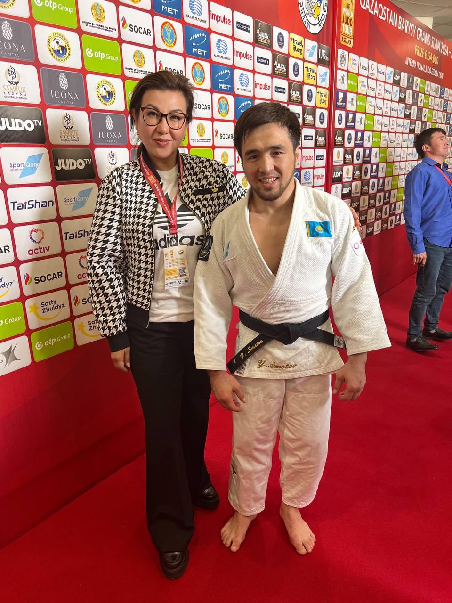
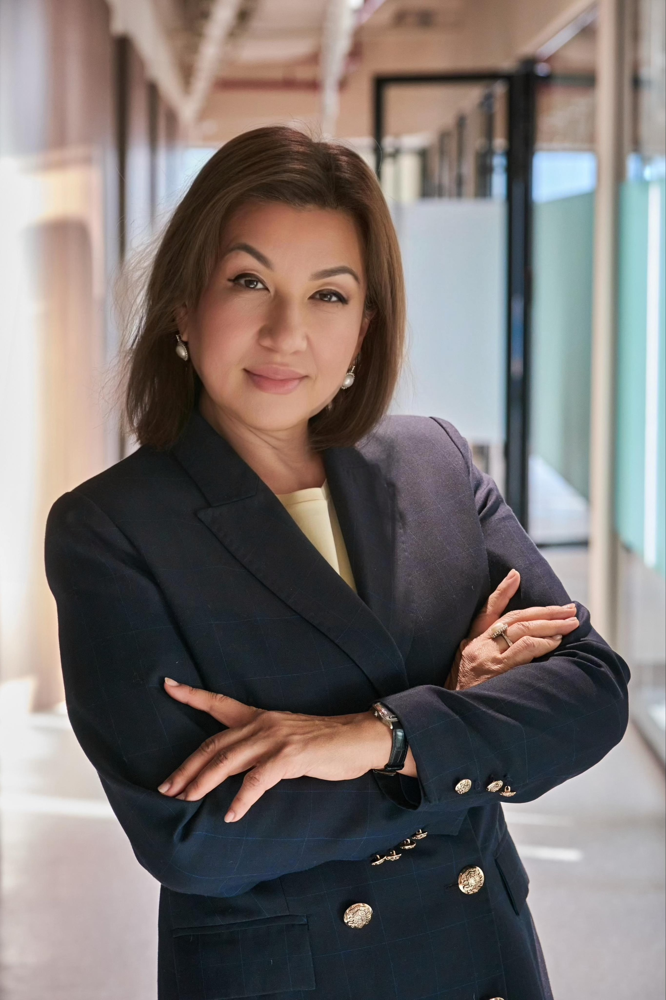
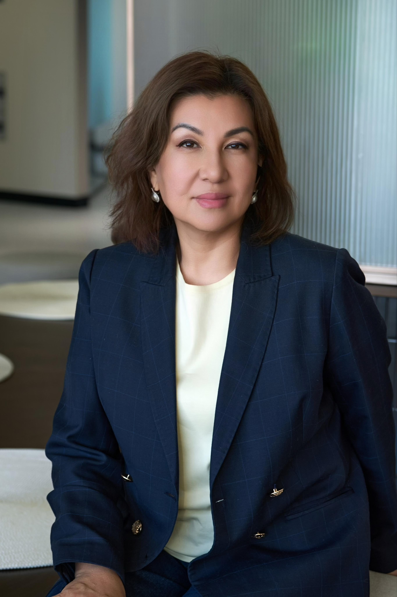

Моменты и события
Из публичной жизни


Эксперт по коучингу и обучению первых руководителей. Психолог, бизнес-тренер, мастер-коуч ICU.


Более 27 лет в управлении и более 13 лет в развитии коучинга, психологического сопровождения и образовательных технологий. Единственный коуч из Казахстана и Центральной Азии со статусом почётного члена ICU.
Магистр психологии и педагогики, доцент. Под её руководством открыты девять региональных офлайн-филиалов ICU в Казахстане. Личные гранты на обучение профессии — 23 млн тенге.
Хочешь изменить мир — измени себя
Президент Международной Ассоциации ICU (International Coach Union) в РК и Средней Азии
Сооснователь Tumar Family Office
Психолог, бизнес-тренер, тренер ДМД
Ученица академика В. В. Козлова
Попечитель школы «Айқанат»
Преподаватель Академии госуправления при Президенте РК (программа «Руководитель новой формации» и MBA)
Сертифицированный бизнес-тренер · Мастер-коуч ICU · Бизнес-тренер по коучингу ICU/ICTA · Мастер-коуч первых руководителей
Трансформатор команд — создаёт команды изменений
Автор нескольких авторских обучающих программ
Внедрила коучинг в Академию государственного управления при Президенте РК
Один из разработчиков профессионального стандарта (карточки профессии) коуча в РК
Спикер форумов и конференций, в том числе экономического форума и BeWoman
Награждена грамотами Министра Просвещения РК
Награждена Министерством науки и высшего образования РК; звание почётного работника сферы образования
Попечитель школы «Айқанат» — поддержка образования и развития детей.
Семья как опора и источник внутренней устойчивости.
Практики осознанности и работа с внутренним состоянием.
Участие в организации медицинских лагерей и помощи людям.
Общественные инициативы и волонтёрская деятельность.
Более 27 лет в управлении — от руководящих ролей до построения команд изменений и внедрения коучинговой культуры в крупных институтах.
Индивидуальная работа с первыми лицами и топ-командами.
Программы развития команд и управленческих компетенций.
Уникальные обучающие программы под задачи компании.
Обучение коучей, менторов и наставников.
№1 онлайн-школа коучинга — масштабируемое обучение.

Это программа не про искусственный интеллект — она про веру человека в то, что он способен создавать.
Я — один из авторов программы Vibe42. Через неё прошли более 600 участников: сотрудники Казахтелекома, представители бизнеса, студенты, врачи, инженеры, преподаватели, руководители и пенсионеры.
Новый этап — до 400 человек ежемесячно в компаниях группы «Самрук-Қазына» по каскадной модели обучения.
Заполните форму — я свяжусь с вами, чтобы обсудить задачи вашей компании.